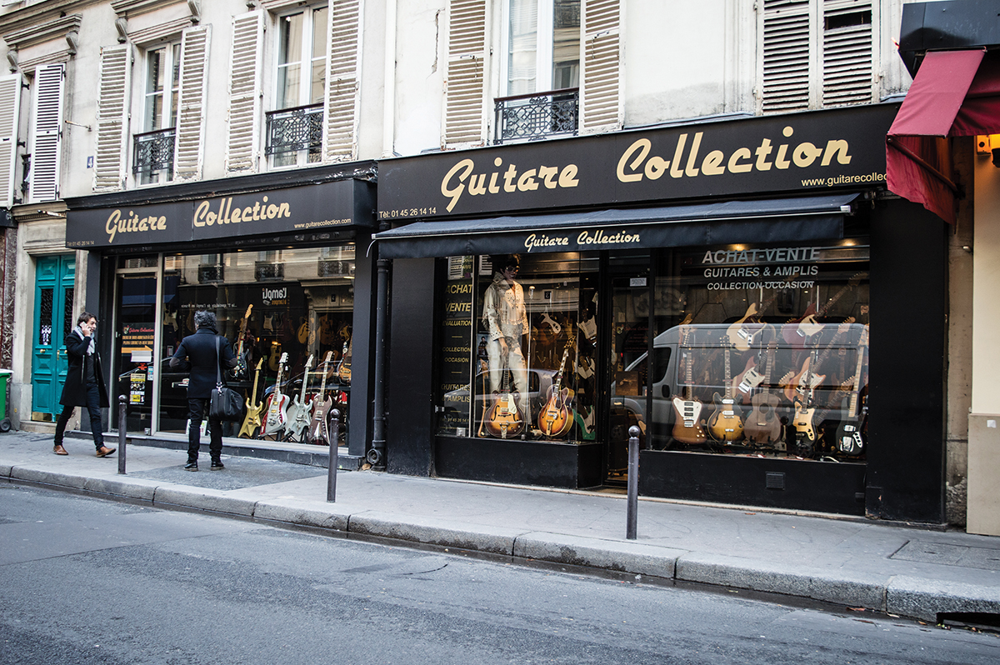

Fender Stratocaster 1962
Colore originale Fiesta Red, condizioni da collezione ed eccellente timbro vintage.
Fine taste for fine guitars
Colore originale Fiesta Red, condizioni da collezione ed eccellente timbro vintage.

Finitura Blonde, suono twang inconfondibile con documentazione originale verificata.

Finitura Sunburst, sustain leggendario e componenti originali d'epoca.

Corpo leggero in mogano, finitura Cherry Red e manico veloce altamente risonante.

Restauro conservativo, settaggio di precisione e cura meticolosa dei tuoi strumenti.

Il negozio nasce nel 1990 nel cuore del centro storico di Firenze come bottega artigiana di riparazioni.
Nel corso degli anni, grazie all'acquisizione di strumenti di altissimo valore storico (Fender, Gibson, Gretsch e altri marchi storici), Fiesta Red è diventata un punto di riferimento per collezionisti e musicisti. Ci occupiamo di verificare rigorosamente la documentazione di ogni pezzo per garantire autenticità e massima trasparenza.
Cura, precisione e assistenza continua al servizio dei musicisti.
Ispezioniamo ogni componente e verifichiamo la documentazione ufficiale di ogni strumento in vendita per garantirne l'autenticità.
Seguiamo i nostri strumenti durante tutta la loro vita oltre l'acquisto con il nostro servizio specializzato di liuteria.
Offriamo formule di pagamento dilazionato in collaborazione con primari enti di credito per facilitare i tuoi acquisti.